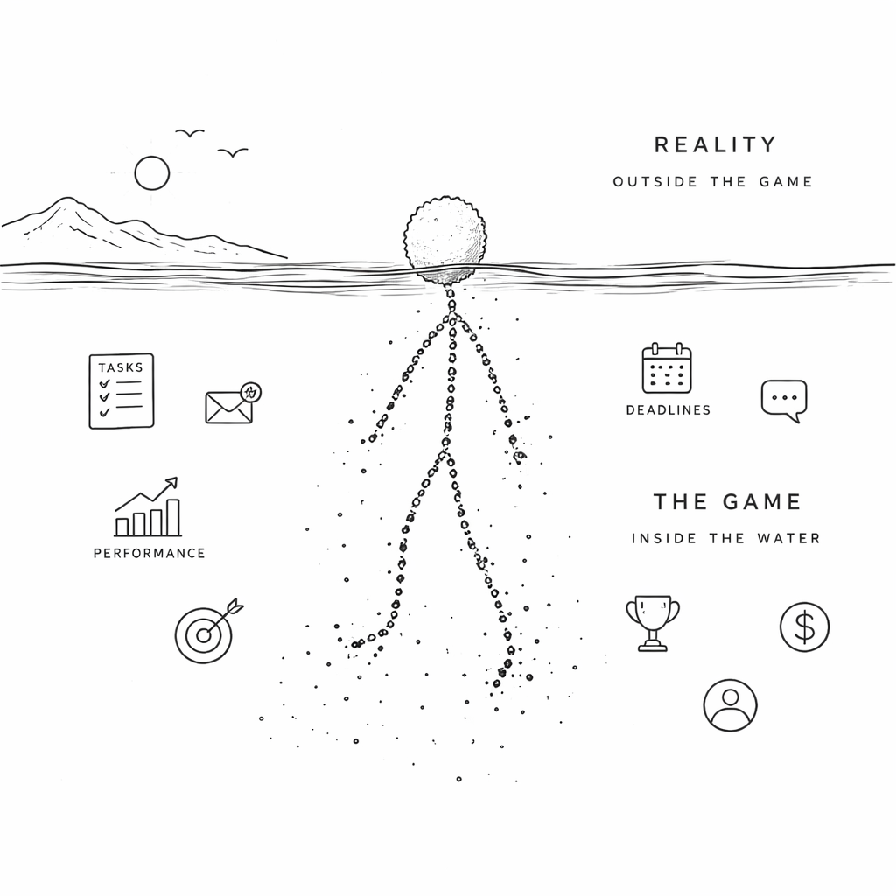

Don’t Sell Yourself to the Script
A Note to Graduating Students
You Made It!
Congratulations! You will soon be walking down the graduation aisle in your new dress, with your proud, adoring family members looking on.
Your high-achieving college friends are locking in. Internships. Offers. Clubs. Titles. Now it’s all about projects, impact, mission, growth, opportunity. Everyone sounds confident. Certain. Like they’ve figured something out.
But if you’re honest, you feel out of sync with that.
You’re just trying to get through this final stretch. You’ve done some volunteering, picked up some skills, built a decent foundation, and made a bunch of friends—but you’re not "all in" on some grand path. You don’t have a five-year plan. You’re not obsessed with a career identity.
And then the comparison starts. Why aren’t you in the top clubs? Why aren’t you getting offers from big-name companies? Why don’t you feel passionate about any of this?

So the question shows up: Should you just buy in?
A lot of people do. Or at least they act like they do. You aren't really built that way. Let's go through some options to see what is right for you.
The Two Bad Options
One option is to fully buy in. You adopt the language, the energy, the identity. You convince yourself you care deeply, even if you didn’t at first. It feels good for a while. Everything is aligned. You have direction. You fit in.
But over time, you get pulled in. Your performance becomes your identity. Your emotional state tracks the company. And you lose perspective. At some point, you can’t tell where you end and the role begins.
The other option is to reject it. But that doesn’t work either.
If you stand outside the system and refuse to engage, you stall out. You don’t build anything. You just sit there resenting things while other people move forward.
Neither option really works, so how can you operate in this environment without feeling fake—and without coming across that way?
What Actually Works
You don’t want to be the person who’s clearly playing a role. People can smell that. Forced enthusiasm. Over-talking. Trying too hard to fit in. It reads as weak.
But you also don’t want to be cold, disengaged, or difficult. That gets you sidelined.
So what’s left? Be solid.
Do your work well. Be reliable. Understand how things actually function. Speak clearly. Don’t overcomplicate it.
And don’t pretend. You don’t need to act like you drank the kool-aid. You don’t need to attach yourself to every initiative or echo every idea like it’s brilliant. You don’t need to signal constant excitement.
Just be real and competent. That combination goes further than people think.
Boundaries
This also means you’re willing to say no.
Not dramatically. Not emotionally. Just cleanly.
When something crosses into your personal space in a way that doesn’t make sense, you push back. When expectations creep, you set a boundary. When something isn’t worth your time, you decline it.
If you’re actually delivering, people tend to respect that. Maybe not everyone, but the people who matter will.
Because now you’re not just another person trying to fit in. You’re someone who knows where they stand.
The Frame
A simple way to think about it: You don’t have to become the role to play it well.
You can learn the language without believing all of it. You can participate without attaching your identity to it. You can care about doing good work without pretending it’s your life’s mission.
And you keep something for yourself: your time, your attention, your identity, parts of your life that aren’t tied to performance reviews or company goals.
That’s what keeps you from getting pulled in too far.
The Payoff
People who fully buy in can look strong, but they’re often fragile. If the role changes or disappears, they don’t know what’s left.
People who reject everything never really get moving.
But if you stay grounded—if you work well, don’t pretend, and set limits—you end up with something better.
You can move inside the system without being owned by it. You can stay without feeling trapped. And when it’s time to leave, you can just leave.
No identity crisis. No collapse.
You were never trying to be the script in the first place. You were just using it.